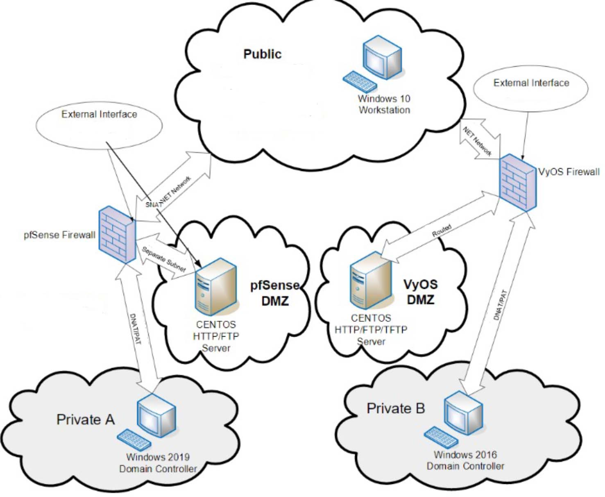

Firewalls
In the lab, two firewalls were created, one was a VyOS machine and the other was a pfSense machine. Each of those firewalls were used to route traffic to the outer public network as well as to and from two security zones behind the firewalls. One zone was a DMZ server running either a CentOS VyOS or CentOS pfSense and the other zone was a private network that contained a windows domain controller. The public network was a host to a windows 10 workstation machine.
The VyOS side of the network the DMZ server was routed using Static NAT (SNAT) from the firewall. The firewall rules for the DMZ server allowed HTTP, FTP, TFTP, and ICMP to reach it. The private network which hosted the windows domain controller was Dynamically(DNAT/PAT) routed. The firewall rules for the private network allowed HTTP and FTP to reach it. The windows server on the private network was promoted to a domain controller.
On the pfSense side of the network the DMZ server was routed via SNAT through the firewall to the public network. The firewall rules for the DMZ server allowed HTTP, FTP, TFTP, and ICMP to reach it. The private network which hosted the windows domain controller was Dynamically(DNAT/PAT) routed. The firewall rules for the private network allowed HTTP and FTP to reach it. The windows server on the private network was promoted to a domain controller as well.
Below is the network diagram for this lab. Continuation of this lab can be found on vpns page.
Firewalls: PfSense, VyOS
